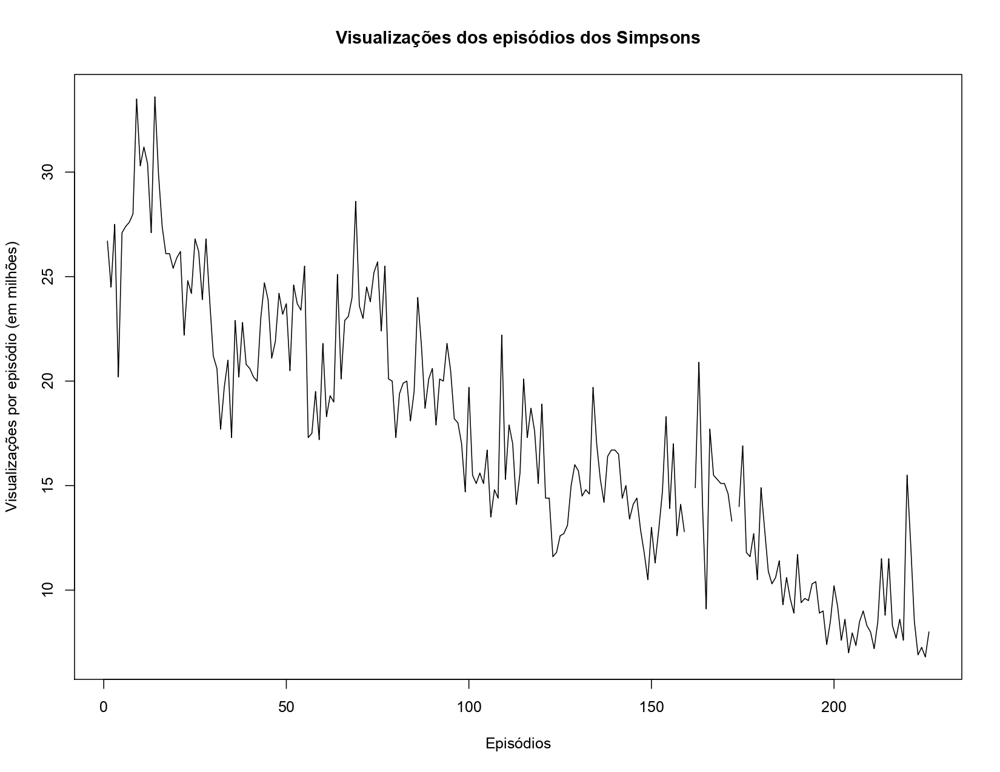
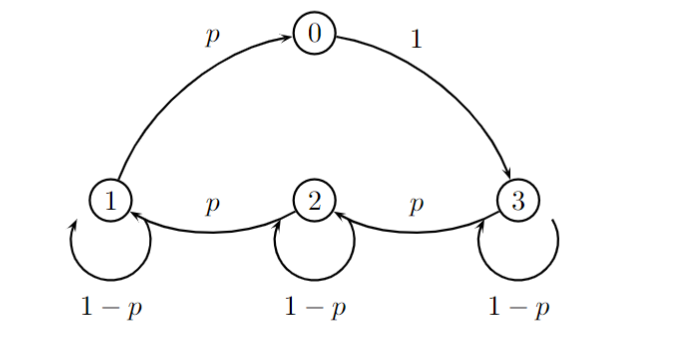
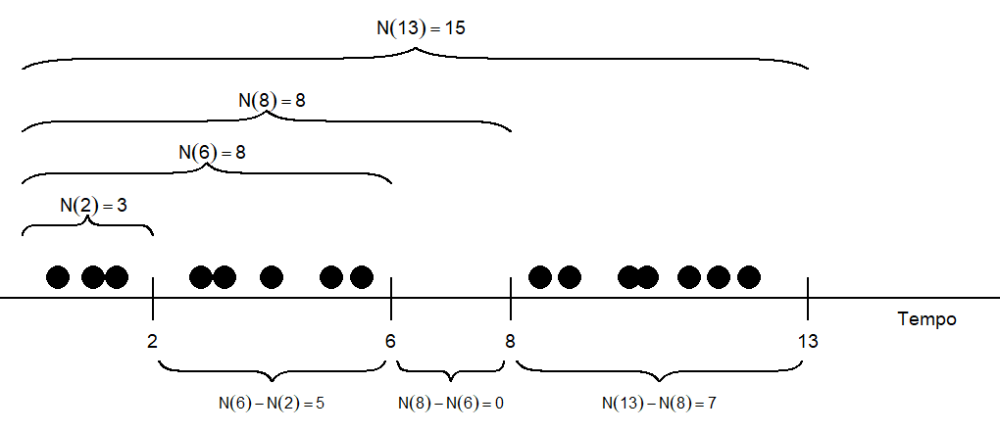
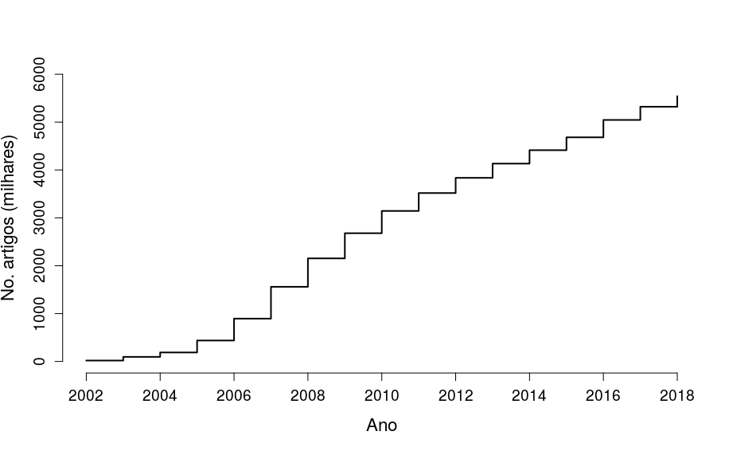

1 Processos Estocásticos
1.1 Introdução
Uma coleção de variáveis aleatórias é denominada processo estocástico.
Definição
Definição 1.1 O conjunto \(\{X(t),t\in \mathcal{T}\}\), onde \(X(t)\) é uma variável aleatória para cada \(t \in \mathcal{T}\subset \mathbb{R}\), é um processo estocástico.
O conjunto dos possíveis valores de \(X(t)\) é denominado espaço dos estados e o conjunto \(\mathcal{T}\) é denominado espaço do tempo ou conjunto de índices1.
Se \(\mathcal{T}\) for um conjunto contínuo, diremos que \(\{X(t),t\in\mathcal{T}\}\) é um processo a tempo contínuo e será mantida a notação \(X(t)\). Se \(\mathcal{T}\) for discreto, diremos que \(\{X_t,t\in\mathcal{T}\}\) é um processo a tempo discreto (neste caso, a notação \(X_t\) é mais conveniente).
Exemplo: Amostra iid
Exemplo 1.1 Sejam \(X_1,X_2,\ldots,X_n\), variáveis aleatórias independentes e identicamente distribuídas com \(X_i\in D\subseteq \mathbb{R}\). Neste caso, temos que \(\{X_i: i=1,2,\ldots,n\}\) é um processo estocástico a tempo discreto, com espaço dos estados igual a \(D\).
No exemplo acima, os índices não possuem influência. De fato, como as variáveis são iid, para qualquer permutação \(\{t_1,\ldots,t_n\}\) dos índices em \(\mathcal{T}\), tem-se que \(\{X_1,X_2,\ldots,X_n\}\sim\{X_{t_1},X_{t_2},\ldots,X_{t_n}\}\). Os próximos exemplos ilustram casos nos quais os índices desempenham um papel fundamental.
Exemplo: Reposição de estoque - caso simples
Exemplo 1.2 Um funcionário de uma loja deve verificar o estoque de certo produto no fim de cada dia. Seja \(X_i\) o número de itens deste produto no \(i\)-ésimo dia. Temos então o processo estocástico \(\{X_i:i=0,1,2,\ldots\}\), onde \(X_0\) é o estoque no momento inicial. Claramente, enquanto não houver reposição de estoque, o \(X_i\leq X_{i-1}\) para todo \(i=1,2,\ldots\). Neste caso, as variáveis \(X_i\) e \(X_{i-1}\) são dependentes e não possuem a mesma distribuição. Considere o seguinte caso particular:
- O estoque suporta no máximo três itens.
- No instante inicial, o estoque está cheio (\(X_0=3\)).
- Em cada dia, o número de itens que é retirado do estoque tem distribuição \(Bernoulli(p)\).
- Quando o estoque chega a zero ao final do dia, a reposição é feita de noite, de modo que haverão 3 itens em estoque no dia seguinte.
Seja \(Z_i\sim\hbox{Benoulli}(p)\), onde \(Z_i\) é independente de \(Z_j\) para todo \(i\neq j\) (esta variável representa o que foi subtraído do estoque no dia \(i\)). Então, se \(X_i\neq 0\), tem-se que \[X_{i+1}=X_i-Z_i\] e quando \(X_i=0\) (o estoque no dia \(i\) está vazio) tem-se que \[X_{i+1}=3.\] Este processo estocástico pode ser resumido pelo seguinte grafo, onde cada vértice representa um dos possíveis valores da variável \(X_i\) e cada aresta mostra a probabilidade de \(P(X_{n+1}=j|X_{n}=i)\), onde \(i\) é o vértice de origem e \(j\) o de destino.

Exemplo: Visualizações de Os Simpsons
Exemplo 1.3 O gráfico abaixo mostra o número de visualizações, em milhões nos EUA, dos episódios de Os Simpsons, para as dez primeiras temporadas. Pode-se definir um processo estocástico onde \(X_i\) é o número de visualizações do \(i\)-ésimo episódio.
Note que, na medida que o número de episódios aumenta, há uma tendência de queda nos valores observados do processo.
1.2 Processos Estacionários
Um processo estocástico \(\{X(t),t\in\mathcal{T}\}\) é dito ser estacionário se \(P(X(t)<x)=P(X(t+k)<x)\) para todo \(k\). Isto quer dizer que a distribuição permanece inalterada com a mudança do índice.
Exemplo: Amostra iid
Exemplo 1.4 Se \(X_1,X_2\ldots,\) é um processo formado por variáveis independentes e identicamente distribuídas, então, \[P(X_{t}<x)=P(X_{t+k}<x)=P(X_1<x)\] para todo \(k=0,1,2,\ldots\). Portanto, uma amostra de vaiid é um processo estacionário.
Exemplo: Estoque simples
Exemplo 1.5 Considere o processo estocástico dado no Exemplo 1.2, onde
\[X_i=\left\{ \begin{array}{ll}X_{i-1}-Z, & \hbox{se }X_{i-1}>0 \\ 3, & \hbox{se } X_{i-1}=0 \end{array}\right.\]
com \(Z_i\sim\hbox{Bernoulli}(p)\) independente de \(Z_j\) para todo \(i\neq j\). Note que
\[\begin{align*} P(X_1\leq 2) &= P(Z_1=1) = p\\ P(X_2\leq 2) &= P(Z_1=1,Z_2=1) +P(Z_1=0,Z_2=1)+P(Z_1=1,Z_2=0)\\ &= p^2 + 2p(1-p) \end{align*}\] Como \(P(X_1\leq 2)\neq P(X_2\leq 2)\), este processo não é estacionário.
Exemplo: Visualizações de Os Simpsons
Exemplo 1.6 Considere novamente o processo estocástico \(X_i\), onde \(i\)-é é a visualização registrada no dia da exibição do \(i\)-ésimo episódio desta série. Note que conhecemos o processo estocástico, mas apenas temos uma amostra observada deste. Contudo, existem evidências de que este processo não é estacionário. Por exemplo, podemos notar que existe uma tendência de queda, algo que seria esperado se o processo fosse estacionário.
1.3 Processos de contagem
Um processo \(\{N(t),t>0\}\) com espaço dos estados igual a \(\{0,1,2,\ldots\}\) é denominado processo de contagem se, para qualquer \(t\), a variável aleatória \(N(t)\) representar o total de eventos que ocorreram durante o intervalo de tempo \([0,t]\).
Definição
Definição 1.2 O processo estocástico \(\{N(t),t\geq 0\}\) é um processo de contagem (PC) se \(N(t)\) representa o total de eventos ocorridos até o tempo \(t\). Um processo de contagem deve satisfazer:
- \(N(t)\geq 0\);
- \(N(t)\) é inteiro positivo;
- Se \(s<t\), então \(N(s)\leq N(t)\).
A diferença \(N(r)-N(s)\), com \(r>s\), é denominada incremento e representa o número de ocorrências no intervalo \((s,r]\). A figura abaixo ilustra um processo de contagem. Nesta, o tempo de ocorrência do evento é representado no eixo Tempo através de um círculo. Acima do eixo do tempo estão registrados os valores do processo \(N(t)\) para os tempo \(t=2,6,8,13\). Abaixo do eixo estão registrados o número de ocorrências entre estes tempos.

Exemplo: Volume de vendas simples
Exemplo 1.7 Suponha que o número de vendas diárias de certo estabelecimento tem distribuição Poisson, sendo que as vendas são independentes. Defina o processo \(\{N(t),t\geq 0\}\) como \[N(t)=\sum_{j=1}^{\lfloor t\rfloor} X_j,\] onde \(\lfloor t\rfloor\) é a parte inteira de \(t\) e \(X_t\sim\hbox{Poisson}(\lambda)\). Defina \(N(0)=0\). Note que este processo representa o volume de vendas até o tempo \(t\). Vamos mostrar que \(\{N(t)\}\) é um processo de contagem provando as seguintes proposições:
- Proposição 1: \(N(t)\geq 0\).
Prova: Para \(t=0,1,2,\ldots\), temos que \(X_t\geq 0\).Então \(N(t)\) é a soma de número não negativos e, portanto, maior que zero.
- Proposição 2: \(N(t)\) é inteiro positivo.
Prova: segue pelo fato de que \(N(t)\) é soma de números naturais.
- Proposição 3: Se \(s<t\), então \(N(s)\leq N(t)\)
Prova: Para \(s<t\), teremos que \[N(t)-N(s)=X_{\lfloor s\rfloor+1}+\cdots +X_{\lfloor t\rfloor}\geq 0,\] pois \(X_t\geq0\) para \(t\in\mathbb{N}\).
1.3.1 Incrementos independentes
Definição: Incrementos Independentes
Definição 1.3 Dizemos que um PC possui incrementos independentes se, para quaisquer dois intervalos disjuntos \((s_1,r_1]\) e \((s_2,r_2]\) teremos que os incrementos \(N(r_1)-N(s_1)\) e \(N(r_2)-N(s_2)\) são independentes. Em outras palavras, os incrementos do PC em intervalos disjuntos são independentes.
Exemplo: Volume de vendas simples
Exemplo 1.8 Voltando ao nosso exemplo, vamos provar que \(\{N(t),t\geq 0\}\) tem incrementos independentes. Considere os intervalos arbitrários da Definição 1.3. Teremos:
\[\begin{align*} &P(N(r_1)-N(s_1)=n,N(r_2)-N(s_2)=m)=\\ \\ &P\left(\sum_{i=\lfloor s_1 \rfloor +1}^{\lfloor r_1 \rfloor} X_i=n,\sum_{j=\lfloor s_2 \rfloor +1}^{\lfloor r_2\rfloor } X_j=m\right)=\\ \\ &P\left(\sum_{i=\lfloor s_1 \rfloor+1}^{\lfloor r_1 \rfloor} X_i=n\right)P\left(\sum_{j=\lfloor s_2 \rfloor +1}^{\lfloor r_2 \rfloor} X_j=m\right)=\\ \\ &P(N(r_1)-N(s_1)=n)P(N(r_2)-N(s_2)=m) \end{align*}\]
Exemplo: Artigos na Wikipedia
Exemplo 1.9 A figura abaixo mostra o número de artigos publicados (em lingua inglesa) na Wikipedia, contados em cada 1 de Janeiro, entre 2002 e 2018. Você pode acessar os dados aqui.

Considere \(N(t)\) o número de artigos publicados até o ano \(t\) (neste caso, \(t=0\) representa o ano de 2001, \(t=1\) o de 2002, e assim por diante). A figura acima ilustra o \(N(t)\) observado.
Evidenciar que o processo \(\{N(t),t\geq0\}\) não tem incrementos indepndentes é uma tarefa simples. Por exemplo, considere o incremento \(P_{t}=X(t,t-1)\), que representa o número de artigos publicados no ano \(t\) e considere a autocorrelação \[r = \frac{\sum_{t=2}^{n}(P_t - \bar{P})(P_{t-1}-\bar{P})}{(n-1)S_p^2},\] onde \(n\) \((=15)\) é o número de incrementos, \(\bar{P}\) e \(S_p^2\) são a média e variância amostrais de \(P_t\). Se os incrementos forem independentes, \(r\) deveria está próximo de zero. Entretanto, temos que \[r = 0,697,\] com um erro padrão2 estimado em \(0,10\). Portanto, um intervalo com confiança aproximadamente igual a 95% é dado por \((0,48\;\;,\;\;0,91)\). Como este intervalo está afastado de zero, temos evidências de que os incrementos deste processo não são independentes.
1.3.2 Incrementos estacionários
Definição: Incrementos Estacionários
Definição 1.4 Dizemos que um PC possui incrementos estacionários se, para um intervalo \((s,s+h]\) a distribuição de \(N(s+h)-N(s)\) depende apenas de \(h\) (mas não de \(s\)).
Exemplo: Volume de vendas simples
Exemplo 1.10 Voltando ao nosso exemplo, para quaisquer \(s,h>0\), teremos que \[\begin{align*}
N(s+h)-N(s) = \sum_{j=\lfloor s \rfloor+1 }^{\lfloor s+h \rfloor}X_j.
\end{align*}\]
Como o lado direito da igualdade acima é descrito como a soma de variáveis aleatórias independentes com distribuição Poisson\((\lambda)\), teremos que \[N(s+h)-N(s) \sim\hbox{Poisson}\left( \sum_{j=\lfloor s \rfloor+1 }^{\lfloor s+h \rfloor}\lambda\right)\] Utilizando o fato de que, para quaisquer \(a,b\) \[\lfloor a+b \rfloor - \lfloor a \rfloor =b,\] teremos que \[\sum_{j=\lfloor s \rfloor+1 }^{\lfloor s+h \rfloor}\lambda=\lambda\left\{[ \lfloor s+h \rfloor -(\lfloor s \rfloor+1 )+1 \right\}\lambda h.\] Portanto, \(N(s+h)-N(s)\sim\hbox{Poisson}(\lambda h)\) e, como esta distribuição depende apenas de \(h\), teremos que os incrementos do processo são estacionários.
1.4 Exercícios
Exercício 1.1
- Seja \(\{X(t),t>0\}\), com \(X(t)\in\{0,1\}\) a classificação de uma pessoa como sadia (\(X(t)=0\)) ou doente \((X(t)=1)\). Identifique o espaço dos estados, o conjunto de índices e classifique este processo como a tempo discreto ou contínuo.
Exercício 1.2
- Seja \(\{X_i,i=1,2,\ldots,\}\) um processo estocástico onde \[\begin{align*}
X_0 &= \mu \\
X_{t+1} &= X_{t} + \varepsilon_{t+1},
\end{align*}\]
onde \(\mu\) é uma constante arbitrária, \(\varepsilon_t\sim\hbox{Normal}(0,1)\) e \(\varepsilon_i\) é independente de \(\varepsilon_j\) para todo \(i\neq j\).
Determine o espaço dos estados e o conjunto de índices deste processo.
Mostre que \(\{X_t,t=0,1,\ldots\}\) não é um processo de contagem.
Mostre que \[X_t = \mu + \sum_{j=1}^{t}\varepsilon_j,\]
e determine a distribuição de \(X_t\). Conclua que este processo não é estacionário.Prove que o processo \(\{X_{t+1}-X_t,t=1,2,\ldots\}\) é estacionário.
Exercício 1.3
- Seja \(\{X_t, t=0,1,\ldots,\}\) um processo estocástico onde \[\begin{align*} X_0 &= 0 \\ X_{t+1} &= X_{t}+ Z_{t+1} \end{align*}\] onde \(Z_t\sim\hbox{Bernoulli}(1/2)\) e \(Z_i\) é independente de \(Z_j\) para qualquer \(i\neq j\).
- Identifique o espaço dos estados e o conjunto de índices deste processo.
- Mostre que \(\{X_t,t=0,1\ldots,\}\) é um processo de contagem.
- Mostre que \(X_t=Z_1+\cdots +Z_t\). Qual é a distribuição de \(X_t\)?
- O processo tem incrementos independentes?
- O processo tem incrementos estacionários?
Exercício 1.4
- Seja \(\{N(t),t\geq 0\}\) um processo de contagem com incrementos estacionários, com \(N(0)=0\). Prove que \(N(t+s)-N(s)\) e \(N(t)\) tem a mesma distribuição.